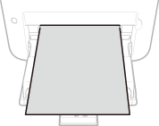
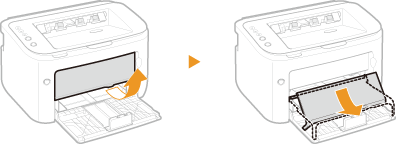
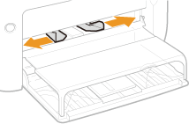
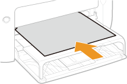
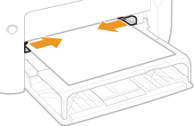

Loading Paper in the Manual Feed Slot
If you want to print using paper not loaded in the multi-purpose tray, load the paper in the manual feed slot. Load paper used frequently in the multi-purpose tray. Loading Paper in the Multi-Purpose Tray
|
|
Always load paper in portrait orientationPaper cannot be loaded in landscape orientation. Be sure to load paper in portrait orientation, as shown in the illustration below.
 Only one sheet can be loaded at a timeLoad only one sheet of paper each time you print. Furthermore, if you specify multiple copies or multiple pages and perform printing, the second and subsequent sheets are fed from the multi-purpose tray.
|
1
Open the multi-purpose tray.

2
Set the tray cover.

3
Spread the paper guides apart.
Spread the paper guides outward.

4
Load the paper and slide it all the way in until it stops.
Load the paper in portrait orientation (with the short edge toward the machine) and the print side face up. Paper cannot be loaded in landscape orientation.


When loading envelopes or preprinted paper, see Loading Envelopes or Loading Preprinted Paper.
5
Align the paper guides against the edges of the paper.
Move the paper guides inward and align them securely against the edges of the paper.


Align the paper guides securely to the width of the paper
Paper guides that are too loose or too tight can cause misfeeds or paper jams.
 |
|
When performing printing, pull out the auxiliary tray in advance so that the output paper does not fall out of the output tray.
After reloading paper that has run out during printing, or resetting the paper after a paper error notification, press the
 (Paper) key to restart printing. (Paper) key to restart printing. |
|
Printing on the Back Side of Printed Paper (Manual 2-Sided Printing)
|
|
You can print on the back side of printed paper. Flatten any curls on the printed paper and insert it into the manual feed slot with the side to print face up (previously printed side face down).
You can use only paper printed with this machine.
You cannot print on the side that has been previously printed.
|